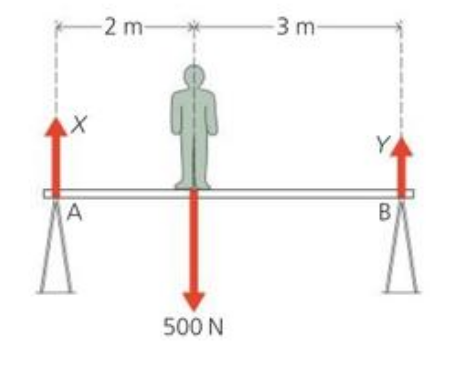
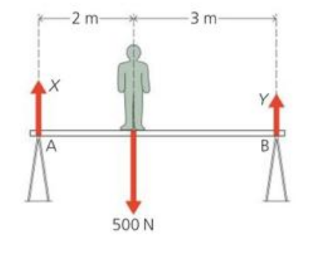
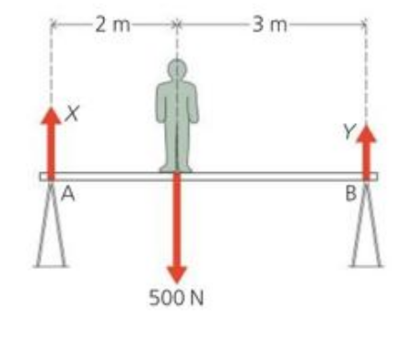

### 2.14: Moving in Circles
* **Newton’s first law of motion:** An object will stay at rest or continue to move at constant velocity unless acted on by a resultant force.
* Therefore, any object that is not moving in a constant velocity must have a resultant force on it.
* When an object is moving in a circle, its velocity keeps changing.
* The resultant force that causes the object to move in a circle is known as **centripetal force**
### 2.14: Moving in Circles
> Any centripetal force must continuously change direction so that it is always directed towards the centre of the circle.
* Centripetal forces always act perpendicularly to the direction of instantaneous velocity.
or
* When resultant force is perpendicular to the direction of motion, the object follows a circular path.
2.14: Moving in Circles
2.14: Moving in Circles
Examples of centripetal force
2.14: Moving in Circles
Examples of centripetal force
Centripetal force is an example of an acceleration on an object that may not cause a change in speed
### 2.14: Moving in Circles
##### Examples of centripetal force
* **Tension** on an object which is spun around on the end of a length of string.
* **Friction** for people or cars moving on curved roads.
* **Gravitational forces**for satellites moving around the Earth
* **Electrical forces** that keep electrons moving around nuclei in atoms.
* **Magnetic forces** which maintain particle beams in circular paths in nuclear accelerators.
2.14: Moving in Circles
Examples of centripetal force
### 2.14: Moving in Circles
**Question:** What provides the centripetal force for these athletes running on a curved track? What design features make sure that this force can be large enough for high speeds?
2.14: Moving in Circles
### 2.14: Moving in Circles
The resultant force required to keep the object moving in a circle varies with speed and mass of the object, and the radius of the circle.
* Increasing the speed $\implies$ more force required
* Increasing radius $\implies$ less force required
* Increasing mass $\implies$ more force required
### 2.14: Moving in Circles
* Many people identify a force acting outwards on them when they go around a circle
* This force is often called **centrifugal force**.
> Centrifugal force is *normally thought of* as the tendency of an object moving in a circle to travel away from the center of a circle.
### 2.14: Moving in Circles
##### Example of centrifugal force
A passenger may feel that they are forced outwards against the side door of a car going quickly around a corner.
* **From the passenger's perspective:** this is sort of correct
* **More correct perspective:** the car door is pushing inwards on the passenger, making them move around a corner.
2.14: Moving in Circles
2.14: Moving in Circles
# Chapter 3: Forces and Pressure
3.1: Forces and Turning Effects
The moment of a force is a measure of its turning effect
### 3.1: Forces and Turning Effects
> $$\text{moment} = \text{force} \times \text{perpendicular distance}$$
* Moment is also called **torque**
* Based on the direction it acts, it is described as clockwise and anti-clockwise
3.1: Forces and Turning Effects
### 3.1: Forces and Turning Effects
> **Principle of moments:** The principle of moments states when a body is in equilibrium, the *sum of the clockwise moments* about any point equals the *sum of the anticlockwise moments* about the same point.
* If an object is in equilibrium:
* There is no resultant force on the object
* There is no resultant moment on the object
3.1: Forces and Turning Effects
3.1: Forces and Turning Effects

3.1: Forces and Turning Effects
3.1: Forces and Turning Effects
Question: A student carries out an experiment to balance a regular $4\;m$ long plank at its mid-point. A mass of $4\; kg$ is placed $80\;cm$ to the left of the pivot and a mass of $3.2\;kg$ is placed $100\;cm$ to the right of the pivot.
Explain, by calculating the moments, whether the plank is balanced.
Use $g = 10 \;N/kg$.
3.1: Forces and Turning Effects
### 3.1: Forces and Turning Effects
**Workbook 3.1, 1.a**
A force of $4.5\\;N$ acts at a distance of $1.5\\;m$ from the pivot. Find the moment of force about the pivot.
**Workbook 3.1, 1.b**
A force acting at a distance of $0.8\\;m$ from a pivot produces a turning moment of $1.6\\; Nm$. Calculate the size of the force.
3.1: Forces and Turning Effects
Workbook 3.1, 1.c
The objects are in equilibrium. Find the unknown values
$d = ?$, $F_1 = ?$, $F_2 = ?$
3.3: More about moments
3.3: More about moments
3.3: More about moments
Workbook 3.3 1.a
Calculate the turning moment due to the load. Give the correct unit.
3.3: More about moments
Workbook 3.3 1.b
If the crane is in equilibrium, state the turning moment due to the counterbalance.
3.3: More about moments
Workbook 3.3 1.c
How far from $O$ should the counterbalance be placed in order to balance the crane?
3.3: More about moments
Workbook 3.3 1.d
Calculate the maximum load that the crane can safely lift with this counterbalance.
### 3.2: Center of Gravity
* A body behaves as if its whole weight were concentrated at one point, called its **centre of gravity**.
* If you hang an object so it can swing freely: the centre of gravity will rest directly beneath the point of suspension.
3.2: Center of Gravity
In a regular object of uniform shape and density, the centre of gravity will be in the geometric centre.
3.2: Center of Gravity
The position of the centre of gravity affects the stability of an object.
An object will fall if the vertical line from the centre of gravity falls outside the base
It will not fall if the vertical line stays within the base
To increase the stability of an object, we can lower the centre of gravity or increase the area of its base
3.2: Center of Gravity
3.2: Center of Gravity
3.2: Center of Gravity
3.2: Center of Gravity
3.2: Center of Gravity
3.2: Center of Gravity
3.2: Center of Gravity
### 3.5: Pressure
* To make sense of some effects in which a force acts on an object we have to consider not only the force but also the area on which it acts.
* For example:
* Wearing skis prevents you sinking into soft snow because your weight is spread over a greater area.
* A nail is designed with a small area of contact which allows the nail to be hammered into the wood easier.
### 3.5: Pressure
> $$ \text{pressure} = \displaystyle \frac{\text{force}}{\text{area}} $$
> or
> $$ p = \displaystyle \frac{F}{A}$$
The SI Unit of pressure is called **Pascal** ($Pa$).
However, because one $Pa$ is pretty small, the kiloPascal ($kPa$) and megaPascal ($mPa$) are more commonly used.
3.5: Pressure
Question: If the box has a weight of $24\; N$, calculate the pressure on the floor when the box is standing on its end and lying flat.
3.5: Pressure
3.5: Pressure
Note: Pressure is not a force, it is force exerted over a contact area
3.5: Pressure
3.5: Pressure
3.5: Pressure
### 3.5: Pressure
**Workbook 3.5, 1.b.i**
Calculate the pressure under a block of mass $0.8\\;kg$ if it rests on a side of area $22\\;cm^2$
**Workbook 3.5, 1.b.ii**
Calculate the weight of an object if it exerts a pressure of $20\\;Pa$ over an area of $0.4\\;m^2$
**Workbook 3.5, 1.c**
A brick of mass $1.5\\;kg$ and dimensions $10\\;cm \times 10 \\; cm \times 20 \\; cm$ rests on the ground.
Calculate the maximum pressure in $N/cm^2$ that it can exert on the ground.
### 3.6: Pressure in liquids
* Pressure beneath a liquid surface depends on the depth and the density of
the liquid.
* The **greater the depth** in a given liquid, the **greater the pressure**. This is because as you increase in depth there is a greater weight of liquid above you.
* At a given depth, the **greater the density** of the liquid, the **greater the
pressure**. This is because a higher density liquid has a greater weight per unit volume.
* Liquid pressure acts equally in all directions.
3.6: Pressure in liquids
3.6: Pressure in liquids
Difference in liquid pressure causes water to shoot out further at different levels
3.6: Pressure in liquids
A liquid finds its own level. (comes to the same height in the container)
The shape of the container does not matter, only the height matters
3.6: Pressure in liquids
If the height of the building is higher than the reservoir, we will need a water pump to send water up to the tank
Dams are thicker at their base than at their tops
3.6: Pressure in liquids
Liquids are almost incompressible (their volume cannot be reduced by squeezing) and they ‘pass on’
any pressure applied to them.
This fact is made use of in hydraulic machines.
The pressure transmitted through the liquid is
$$ \text{pressure} = \frac{\text{force}}{\text{area}} = \frac{f}{a}$$
This pressure caused by $f$ acts on a second piston of larger area $A$, producing an upward force, $$F = \text{pressure} × \text{area} = \frac{f}{a} \times A = f \times \frac{A}{a}$$
Since $A$ is larger than $a$, $F$ must be larger than $f$
$A/a$ is known as the **force multiplying factor**
3.6: Pressure in liquids
A hydraulic jack has a platform on top of piston $B$ and is used in garages to lift cars.
Both valves open only to the right and they allow $B$ to be raised a long way when piston $A$ moves up and down repeatedly.
3.6: Pressure in liquids
The pressure increases with depth and density.
$$ \begin{aligned}
\text{liquid pressure} & = \text{density} \\ & \quad \times \text{acc. due to gravity} \\ & \quad \times \text{depth of liquid} \end{aligned}$$
or
$$ p = \rho \times g \times h$$
3.6: Pressure in liquids
For the change in pressure at different depths:
$$ \begin{aligned}
\text{change in pressure} & = \text{density} \\ & \quad \times \text{acc. due to gravity} \\ & \quad \times \text{change in depth} \end{aligned}$$
or
$$ \Delta p = \rho \times g \times \Delta h$$
3.6: Pressure in liquids
Refer to Section 3.6 "Calculating the pressure in a liquid" to derive the formula $p = \rho g h$
3.6: Pressure in liquids
### 3.6: Pressure in liquids
**Question:** If the density of water is $1000\\;kg/m^3$, what is the pressure due the water at the bottom of a swimming pool $2\\;m$ deep?
**Question:** Calculate the increase in pressure at a depth of $2\\; m$ below the surface of water of density $1000\\; kg/m^3$.
**Question:** Calculate the depth of water of density $1020\\;kg/m^3$ where the pressure is $3.0 \times 10^6\\; Pa$.
**Workbook, 1.c:** What is the pressure at the bottom of a swimming pool of depth $2.25\\;m$ if the density of water is $1000\\;kg/m^3$?
3.6: Pressure in liquids
A hydraulic jack is used to lift a heavy load. A force of $1\; N$ is applied to a piston of area $0.01\; m^2$ and pressure is transmitted through the liquid to a second piston of area of $0.5 m^2$. Calculate the load which can be lifted.
3.6: Pressure in liquids
3.6: Pressure in liquids
3.6: Pressure in liquids
### 3.7: Pressure from the air
##### Self Study
* Just like liquids, the air around us has pressure exerted on all directions
* Atmospheric pressure at sea level is around $100 kPa$
* This pressure is known as $1 \text{bar}$
* A **manometer** is an instrument used to measure and indicate pressure.
3.7: Pressure from the air
U-Tube manometer
$$\text{pressure of gas} = \text{atmospheric pressure} + \text{pressure due to liquid column}$$
Manometers for higher pressures use mercury instead of water.
3.7: Pressure from the air
Mercury barometer
A barometer is a manometer which measures atmospheric pressure.
$$\text{pressure of the column of Hg} = \text{atmospheric pressure on the surface}$$
At sea level, the mercury barometer will measure 760mm of Hg
Question:The height of mercury in a barometer is found to be $760\;mm$. Taking the density of mercury as $13600\; kg/m^3$ and gravitational field strength as $9.8\; N/kg$, find the atmospheric pressure indicated by the barometer.


 
